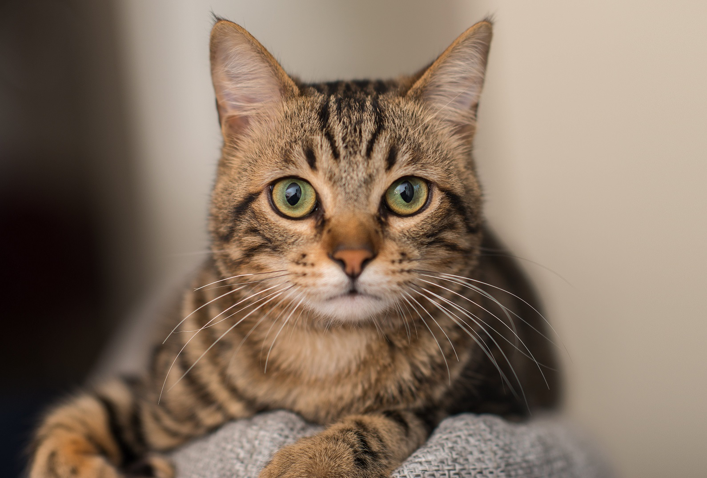
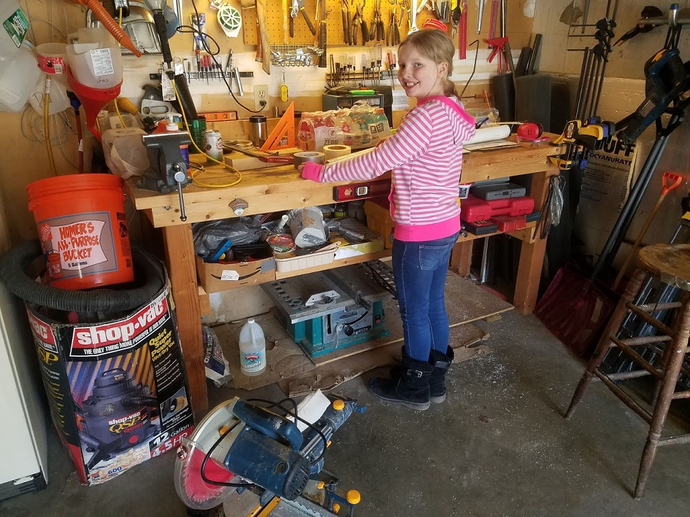
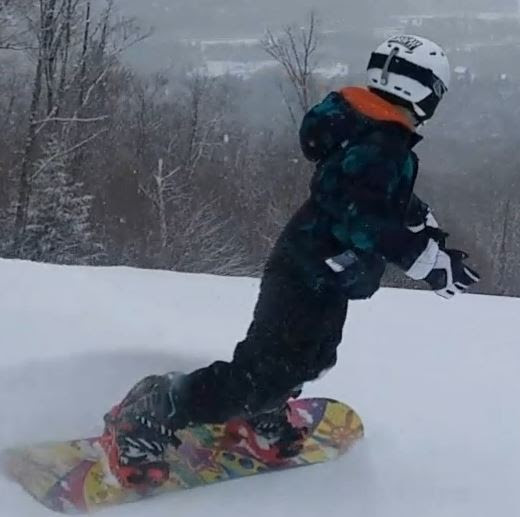
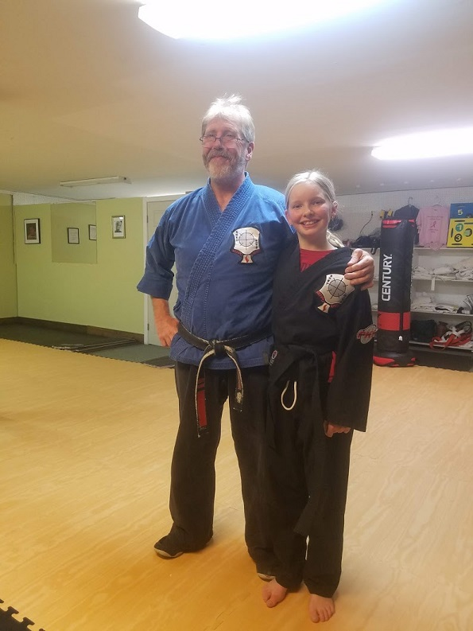

Need a cat sitter or dog walker who has experience?? Well then contact Emme's cat sitting service!!
   What I do: When someone is gone I go over to their house and sit for their cat. I play with that cat or cats, fill up the water and food, empty the litter box, water your plants, water your garden, and water your flowers for no extra charge. It you have other pets I will also tend to there needs.
I also do dog walking!! I will come to your house as many times a week as you would like and take your dog on a walk.
Purpose of this business: For people not to worry about their cat when they are gone on a trip.
Charge: I will charge $10 per day if your animal is a cat. If your animal is a dog then it will be 5 dollars per visit assuming I will come twice a day. If you have 1 cat or 10 cats the price will always be $10.
Contact Information: emmeunderwood@gmail.com or my home phone number:603-471-9210. I will try to get back to you as quick as I can.
My resume: Experience: I have some experience with cat sitting. I have sat at Safe Haven before. Safe Haven is in Wells, Maine and is a no kill shelter for cats. I have also been around cats a lot. My aunt and uncle both have cats. Education: I have gotten an A in every subject since letter grades were given out in 5th grade. I am a math excel student. Math excel is the highest level math class in 6th grade. I have also taken Khan Academy courses at the 6th grade level in 5th grade and completed it. What makes me unique: I am a black belt in karate and have been doing karate for 6 years (I also have been doing it for longer than I have not). I am also a snowboarder. My dad is a snowboard instructor at Pats Peak. I have been snowboarding for 5 years now.